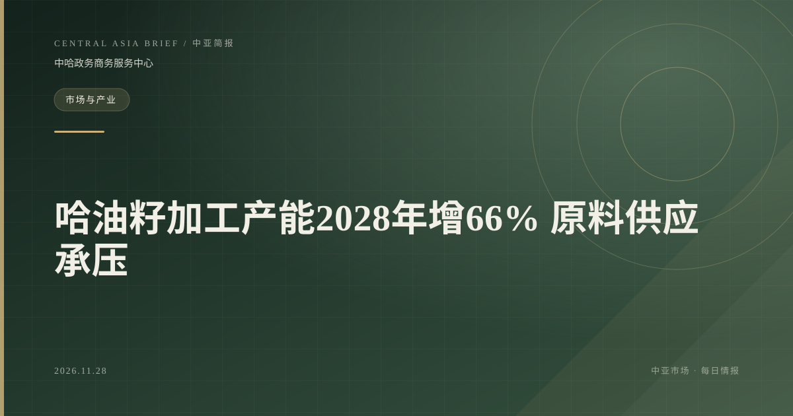

Baiterek 2027年拟投放8万亿坚戈支持经济，坚戈与通胀预期改善；油籽加工扩能与原料缺口并存，哈国油公司或折价接手卢克资产。

今日要点
油籽加工扩能与原料缺口
哈萨克斯坦油籽加工能力到2028年将增长66%，但报道同时提示，工厂可能面临油料短缺风险 [7]。产能扩张与原料供给之间的匹配问题，是判断该领域投资机会的关键变量。
对计划进入油脂加工环节的中国企业而言，需同步评估原料采购半径与季节性库存安排；具体产能数据与投产节奏以官方及企业最新披露为准 [7]。
政策性资金与宏观预期
Baiterek国家投资控股董事会11月27日会议批准年度预算与关键指标，计划2027年提供8万亿坚戈（约175亿美元）经济支持，重点投向投资、工业产能扩张和企业支持 [11]。
哈萨克斯坦国家银行11月宏观经济调查显示，分析师上调通胀、汇率和出口收入预测，同时小幅下调今年经济增长预期；调查于11月12日至18日覆盖15家金融、评级和研究机构 [16]。涉及汇率与融资成本判断，应以央行最新公告和专业顾问意见为准。
能源资产与产业项目
有分析人士提出，哈萨克斯坦国家石油天然气公司可能以更低价格收购卢克石油在哈资产，前提是获得美国财政部外国资产控制办公室（OFAC）许可；相关资产账面价值已下调 [13]。该交易仍处不确定状态，不宜视为既定结论。
产业项目方面，阿克托别计划启动哈萨克斯坦首个婴幼儿果泥生产项目，并获得哈萨克斯坦开发银行支持 [22]。项目规模、投产时间等细节尚未在材料中披露。
其他动态
哈萨克斯坦原子能公司就刑事案件第二名涉案人员的职务作出说明，称其为主管部门首席经理，不属于公司高层；法院已对两名涉案人员实施两个月羁押 [8][9]。该事项属公司治理与合规范畴，对合作方尽职调查具有参考意义。
香港旅游业界40人代表团访问阿拉木图，在直飞航线开通前与哈方对接联合开发旅游产品 [12]。另有议员提议全面禁止能量饮料的生产、进口和销售 [35]，尚属提议阶段。
对企业意味着什么
- 判断：油籽加工产能扩张快于原料供给，进入该环节应优先锁定原料来源与仓储物流，避免产能空转 [7]。
- 判断：Baiterek 2027年资金投向工业产能与企业支持，相关项目可提前对接其下属金融机构，具体条件以官方规定为准 [11]。
- 判断：卢克资产交易受OFAC许可约束，存在不确定性，参与方应设置合规与退出条款 [13]。
- 判断：通胀与汇率预期改善有利于成本测算，但汇率、税费与用工合规仍须以官方最新规定和专业顾问意见为准 [16]。
信息来源
- [7] 新浪财经 — 到2028年，哈萨克斯坦的油籽加工能力将增长66%，但工厂可能面临油料短缺的风险 · 2026.11.28
- [8] Kursiv — «Казатомпром» прояснил статус второго фигуранта уголовного дела · 2026.11.27
- [9] Kursiv — Суд на два месяца арестовал двух фигурантов дела «Казатомпрома» · 2026.11.27
- [11] The Astana Times — Baiterek Holding to Expand Investment Support for Kazakhstan’s Economy in 2027 · 2026.11.27
- [12] Kursiv — Туристический бизнес Гонконга приехал в Алматы перед запуском прямых рейсов · 2026.11.27
- [13] Kursiv — «КазМунайГазу» предложили купить активы «Лукойла» по привлекательной цене · 2026.11.27
- [16] The Astana Times — Kazakhstan’s 2027 Outlook Improves as Inflation Forecast Falls, Tenge Strengthens · 2026.11.27
- [22] Tengrinews — Первое в Казахстане производство детских пюре планируют запустить в Актобе · 2026.11.27
- [35] Tengrinews · English — Kazakh lawmaker proposes complete ban on energy drinks · 2026.11.25
本文由中哈政务商务服务中心编辑部基于公开来源整理，引用编号对应文末信息来源；仅作一般性信息参考，不构成法律、税务或投资建议。 涉及具体政策、费率与许可要求，请以哈萨克斯坦官方最新规定及持牌专业机构意见为准。